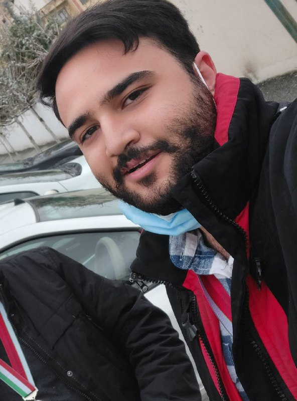

توضیحات تکمیلی:
بنده در 1 بهمن سال 1380 بدنیا آمدم و در کرج زندگی میکنم. از بچگی به فوتبال بسیار علاقه داشتم و موفق شدم در سن 15 سالگی وارد تیم پیکان بشوم اما متاسفانه در یک مسابقه دچار شکستگی مچ پای راست شدم و دوران فوتبالی من همون جا به پایان رسید. بعد از این اتفاق به المپیاد ریاضی پرداختم و موفق شدم دو مدال برنز و نقره المپیاد ریاضی کسب کنم و سپس وارد دانشگاه شریف رشته مهندسی مکانیک شدم بعد از دوترم دیدم علاقه چندانی به این رشته ندارم پس به مهندسی کامپیوتر تغییررشته دادم چون این رشته بیشتر به ریاضیاتی که در المپیاد باهاشون سروکار داشتم ارتباط دارد توانست علاقه من را به خودش جلب کند.